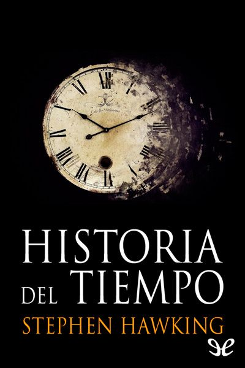
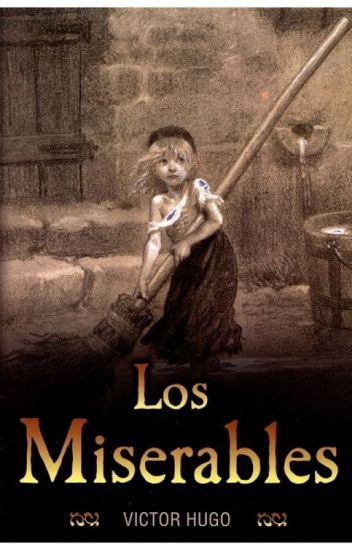
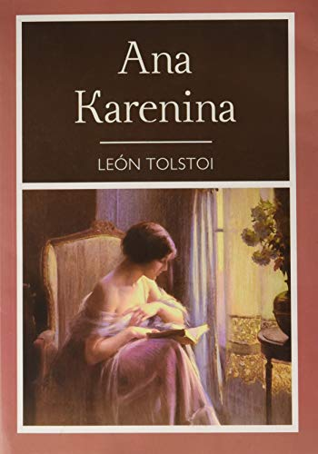
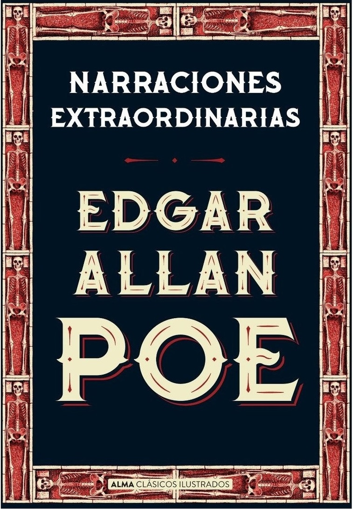

MI TOP 5 LIBROS 📖
1. Asesinato en el Orient Express
Autora: Agatha Christie
Descripción:
Un referente universal. Uno de los casos más famosos de Hércules Poirot 🧐.
Una víctima, doce sospechosos y una mente privilegiada en busca de la verdad.
En un lugar aislado de la antigua Yugoslavia, en plena madrugada, una fuerte tormenta de nieve
obstaculiza la línea férrea por donde circula el Orient Express. Procedente de la exótica Estambul,
en él viaja el detective Hércules Poirot, que repentinamente se topa con uno de los casos más
desconcertantes de su carrera: en el compartimiento vecino ha sido asesinado Samuel E. Ratchett
mientras dormía, pese a que ningún indicio trasluce un móvil concreto. Poirot aprovechará la situación
para indagar entre los ocupantes del vagón, que a todas luces deberían ser los únicos posibles autores
del crimen. La novela más popular del mítico detective Hércules Poirot.

2. Historia del tiempo
Autor: Stephen Hawking
Descripción:
" Historia del tiempo " es un libro de divulgación sobre el espacio y el tiempo ⏱ escrito por uno de los
físicos teóricos más prestigiosos de la actualidad. En él Stephen W. Hawking presenta de forma clara y
concisa los conceptos fundamentales de la mecánica newtoniana, la teoría de la relatividad, la mecánica
cuántica y la cosmología contemporánea, temas todos ellos que, junto a su interés intrínseco, permiten
enmarcar el problema de fondo tratado en el libro: el origen del universo y la creación del espacio-tiempo,
llegando a asomarse a campos más amplios y aventurados, como la metafísica e incluso la teología,
al plantearse la naturaleza de un Dios creador, o más bien garante del sentido del universo.

3. Los miserables
Autor: Víctor Hugo
Descripción:
Jean Valjean ha cumplido una condena de casi veinte años por robar comida para su familia.
Fuera de la cárcel, la sociedad le margina y no le queda más remedio que seguir robando.
Un inesperado encuentro con el obispo Myriel le hará cambiar de actitud y redimirse.
A pesar de ello y de adoptar una nueva identidad, la justicia, encarnada en el implacable
policía Javert, le obliga a emprender una huida permanente que le llevará a esconderse en
conventos y cloacas, y a pasar por los campos de batalla de Waterloo y por las barricadas
del París 🗼 revolucionario de 1832, siempre buscando para sí y para los demás una justicia que
le es negada." Los miserables" , una de las obras clásicas de la literatura universal que se
ofrece aquí en una traducción moderna y fidedigna, sin omisiones ni censuras, ha sido llevada
al cine en numerosas ocasiones y es la base del mundialmente conocido musical homónimo.

4. Ana Karenina
Autor: León Tolstói
Descripción:
«Todas las familias felices se parecen unas a otras, cada familia desdichada lo es a su manera.»
La historia de Anna Karénina, junto a la de Madame Bovary, es la del adulterio más célebre de la
literatura. El enamoramiento de la protagonista, casada 💍 con el alto funcionario Karénin, por el
atractivo militar Vronski y el estrepitoso romance que con él vive son el eje de una novela que es
mucho más que la pulida tragedia de una caída en desgracia: es un esmerado y delicado retrato de todo
un tiempo y un lugar, la vivisección de una sociedad en la que la felicidad de algunos convive con la
desdicha de otros.

5. Narraciones extraordinarias
Autor: Edgar Allan Poe
Descripción:
El mundo descrito por Edgar Allan Poe 🧥 en estas historias extraordinarias es frío, silencioso, maldito,
intenso, estéril. El terror se convierte en una presión psicológica interna más que en una lucha contra
fuerzas sobrenaturales. En los cuentos de Poe, el paso de la cordura a la locura parece algo lógico,
medido por una simple cuestión de grado.
